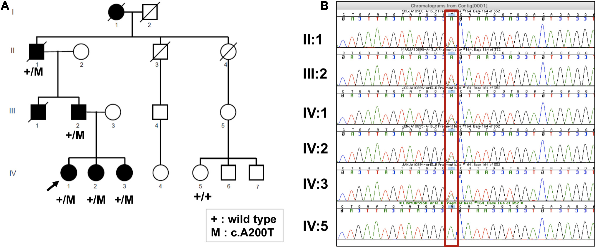

Baylor College of Medicine · Houston, Texas
RatnapriyaLab
Understanding the genetics of vision loss.
Connecting genomics, computational biology, and molecular research to uncover the mechanisms of retinal and macular degeneration.
Our research
From genetic variation to disease mechanisms
Understanding the role of genetic variations leading to retinal and macular degenerative diseases represents the central theme of our research. Large-scale genomic studies have demonstrated the massive scale of genetic variations among individuals, which have revealed important insights into genetic diversity and disease susceptibility.
We focus on harnessing the power of genomic technologies to address translational and clinical bioinformatic challenges pertaining to retinal and macular degenerative diseases. We generate multiple high-throughput functional genomics data sets on the genome, transcriptome and epigenome in disease-relevant tissues/cells and use computational approaches to integrate and analyze this data to identify the molecular components and the structure of the regulatory apparatus underlying the disease.
Our focus areas
Exploring the biology behind vision loss
Genome-wide association studies (GWAS) have established a major role of non-coding variants in Age-related macular degeneration (AMD), which is the leading cause of blindness in the elderly. However, the biological interpretation of AMD-GWAS findings remains challenging as we have a limited understanding of how associated non-coding variants translate into disease pathogenesis. In recent years, gene expression regulation has emerged as a dominant mechanism for non-coding variants to mediate the disease risk. I aided functional interpretation of AMD-associated, non-coding variants by performing a large scale, integrative analyses of transcriptome (RNAseq) and their genetic variations from a large cohort (453 individuals) including both controls and cases at distinct stages of AMD. As next step, we generate and integrate multiple high-throughput functional genomics data sets on the genome, transcriptome, and epigenome, in disease-relevant tissues/cells and use computational approaches identify causal variant, disease-associated cis-regulatory regions, target gene, and the disease mechanism underlying a GWAS loci.
1. Ratnapriya R, Sosina OA, Starostik MR, Kwicklis M, Kapphahn RJ, Fritsche LG, Walton A, Arvanitis M, Gieser L, Pietraszkiewicz A, Montezuma SR, Chew EY, Battle A, Abecasis GR, Ferrington DA, Chatterjee N, Swaroop A. Retinal transcriptome and eQTL analyses identify genes associated with age-related macular degeneration. Nat Genet. 2019 Apr;51(4):606-610. doi: 10.1038/s41588-019-0351-9. Epub 2019 Feb 11. Erratum in: Nat Genet. 2019 Jun;51(6):1067. doi: 10.1038/s41588-019-0430-y. PMID: 30742112; PMCID: PMC6441365.
2. Ratnapriya R, Grassman F, Chen R, Hewitt A, Du J, Saban DR, Klaver CCW, Ash J, Stambolian D, Tumminia SJ, Qian J, Husain D, Iyengar SK, den Hollander AI. Functional genomics in age-related macular degeneration: From genetic associations to understanding disease mechanisms. Exp Eye Res. 2025 May;254:110344. doi: 10.1016/j.exer.2025.110344. Epub 2025 Mar 13. PMID: 40089136; PMCID: PMC12048874.
Using transcriptomic data from 453 donor retinas, our machine learning pipeline identified 81 genes associated with immune response, complement activation, and extracellular matrix pathways. The majority of these genes were enriched in their expression within retinal glial cells, particularly microglia. The integration of AMD-GWAS data identified a common regulatory variant, rs4133124 at PLCG2, as a novel AMD association.1
Additionally, integrating AMD-GWAS data with gene expression profiles and epigenetic annotations revealed an enrichment of AMD-associated genetic variants in microglia. Given the emerging role of microglia-driven dysregulation across neurodegenerative diseases, including AMD and Alzheimer’s disease (AD), we compared transcriptomic and epigenomic profiles of retinal and brain microglia and found that they share key molecular and genetic features, particularly those associated with neurodegenerative disease pathways.2
Collectively, our studies provide molecular insights into the recurring theme of immune dysfunction in AMD, highlight the significance of microglia as an important determinant of AMD, and offer an opportunity to utilize resources from both retinal and brain microglia to deepen our understanding of their contributions to genetic variations in neurodegenerative diseases.
1. Ma K, Nakajima H, Basak N, Barman A, Ratnapriya R. Integrating Explainable Machine Learning and Transcriptomics Data Reveals Cell-Type Specific Immune Signatures Underlying Macular Degeneration. npj Genomic Medicine. 2025;10:48. PMCID: PMC12167386.
2. Ma K, Ratnapriya R. Molecular and genetic landscapes of retina and brain microglia in neurodegenerative diseases. Genome Research. 2025;35(10):2143–2157. doi: 10.1101/gr.280554.125. (Cover Article). Full text · View journal cover.
Variation in gene expression is a key driver of phenotypic diversity and plays a central role in the development of both rare and common diseases. Understanding gene expression dysregulation is crucial for uncovering molecular disease mechanisms and identifying therapeutic targets. However, studying gene expression in disease-relevant human tissues is challenging due to limited sample availability and the influence of genetic, epigenetic, and environmental factors.To address these challenges, we apply machine learning (ML) methods to uncover biologically meaningful patterns in transcriptomic data.
In a recent work, we have developed an explainable ML pipeline using retinal transcriptomes from 453 donors, identifying 81 genes that distinguish AMD patients from controls (AUC-ROC 0.80, CI 0.70–0.92). Our model leverages non-linear data relationships and employs rigorous feature selection and dimensionality reduction. Integrating AMD GWAS data, we also identified rs4133124 at PLCG2 as a novel regulatory variant associated with AMD. These results highlight the benefits of integrative analytical approaches to regain the holistic view of the AMD that is lost in experimentally tested reductionist approaches or hard statistical cut-offs.
Human diseases with similar phenotypes can be interconnected through shared biological pathways, genes, or molecular mechanisms. Inherited retinal diseases (IRDs) cause photoreceptor dysfunction due to mutations in approximately 300 genes, affecting visual transduction, photoreceptor morphogenesis, and transcription factors, suggesting common pathobiological mechanisms. The high clinical heterogeneity of IRDs makes it challenging to develop effective therapeutic interventions in large cohorts of patients. Therefore, our lab is interested in applying genomic approaches to understand the functional relationships among IRD genes that culminate in photoreceptor degeneration.
In a recent study we examined the functional relationship between known IRDs genes by integrating peaks and gene expression data from the key photoreceptor transcription factors (TFs) Crx and Nrl. We demonstrated that the targets of these TFs were enriched in IRDs causal genes. Co-expression network analysis revealed that IRD-centric networks were disrupted when Crx and Nrl were knocked out. Finally, we identified a highly connected core module comprising 14 IRD and 39 target genes, of which 29 were dysregulated in the rod photoreceptors of the four IRD mouse models. These findings offer a network-based interpretation of IRDs, aiding in the identification of common mechanisms, prioritizing genes for novel disease gene identification, and informing the development of gene-agnostic therapies for IRDs.
Singh A, Ratnapriya R. Integration of multiomic data identifies core-module of inherited-retinal diseases. Hum Mol Genet. 2025 Feb 17;34(5):454-465. doi: 10.1093/hmg/ddaf001. PMID: 39797395
GWAS signals are primarily, common, non-coding variants and identity of the causal gene is not obvious . In a shift from common-disease common-variants (CDCV) hypothesis, the role of rare variants are being recognized in complex diseases. Identification of a rare variants can provide hypothesis-free evidence for causality by pointing to the target gene underlying AMD. Thus, we apply whole exome sequencing to identify the rare variants in AMD and related maculopathies. Our most recent work on the analysis of 63 multiplex AMD families identified rare variants and target genes at eight AMD loci.
Mutations in >300 genes are associated with Inherited Retinal Degenerative disease (IRDs) and display considerable clinical heterogeneity. We apply whole-exome sequencing for rapid identification of disease-causing variants in retinal disease patients and families with the aim of expediting the novel disease gene discovery, improved molecular diagnosis, and for the understanding of the role of more than one gene in causing monogenic diseases.
1. Ratnapriya R, Jacobson SG, Cideciyan AV, English MA, Roman AJ, Sumaroka A, Sheplock R, Swaroop A. A Novel ARL3 Gene Mutation Associated With Autosomal Dominant Retinal Degeneration. Front Cell Dev Biol. 2021 Aug 17;9:720782. doi: 10.3389/fcell.2021.720782. PMID: 34485303; PMCID: PMC8416110.
2. Pierrache LHM, Kimchi A, Ratnapriya R, Roberts L, Astuti GDN, Obolensky A, Beryozkin A, Tjon-Fo-Sang MJH, Schuil J, Klaver CCW, Bongers EMHF, Haer-Wigman L, Schalij N, Breuning MH, Fischer GM, Banin E, Ramesar RS, Swaroop A, van den Born LI, Sharon D, Cremers FPM. Whole-Exome Sequencing Identifies Biallelic IDH3A Variants as a Cause of Retinitis Pigmentosa Accompanied by Pseudocoloboma. Ophthalmology. 2017 Jul;124(7):992-1003. doi: 10.1016/j.ophtha.2017.03.010. Epub 2017 Apr 13. PMID: 28412069; PMCID: PMC5868413.
3. Roberts L, Ratnapriya R, du Plessis M, Chaitankar V, Ramesar RS, Swaroop A. Molecular Diagnosis of Inherited Retinal Diseases in Indigenous African Populations by Whole-Exome Sequencing. Invest Ophthalmol Vis Sci. 2016 Nov 1;57(14):6374-6381. doi: 10.1167/iovs.16-19785. PMID: 27898983; PMCID: PMC5132076.
4. Namburi P, Ratnapriya R, Khateb S, Lazar CH, Kinarty Y, Obolensky A, Erdinest I, Marks-Ohana D, Pras E, Ben-Yosef T, Newman H, Gross M, Swaroop A, Banin E, Sharon D. Bi-allelic Truncating Mutations in CEP78, Encoding Centrosomal Protein 78, Cause Cone-Rod Degeneration with Sensorineural Hearing Loss. Am J Hum Genet. 2016 Sep 1;99(3):777-784. doi: 10.1016/j.ajhg.2016.07.010. PMID: 27588452; PMCID: PMC5011076. Correction published November 2016.


More from the lab
Meet our researchers and explore our recent publications.
Recent publications Meet the teamPeople & discoveries
Get to know our lab
Meet Current Lab Members
PI
I am an Assistant Professor in the Department of Ophthalmology at Baylor College of Medicine, where my research focuses on the genetics of retinal and macular degenerative diseases. I integrate genomic, transcriptomic, and epigenetic data to identify causal genes and mechanisms underlying neurodegeneration and vision loss. I earned my Ph.D. in Human Genetics from JNCASR, India, and completed postdoctoral training in ocular genomics at the National Eye Institute. Outside of work, I enjoy spending quality time with my family and exploring the outdoors. Meet PI
Postdoc Associate
I earned my Ph.D. from the National Institute of Plant Genome Research (NIPGR), New Delhi, India, in 2022 and joined RatnapriyaLab in March 2023. My research combines computational biology and integrative multiomics to understand gene regulation in retinal health and disease. My earlier work focused on non-coding RNAs, fusion transcripts, and the development of bioinformatics databases. At RatnapriyaLab, I investigate gene regulatory networks and molecular pathways underlying inherited retinal diseases (IRDs) and age-related macular degeneration (AMD), with the goal of connecting genetic variation to disease mechanisms.
Postdoc Associate
I am a Ph.D. biologist with expertise in endocrinology, physiology, molecular genetics, evolution, and bioinformatics. My research explores how molecular and endocrine signaling pathways regulate development, tissue function, and physiological responses. I completed my doctoral research at Colorado State University, where I investigated the molecular mechanisms regulating molting in decapod crustaceans. My background bridges experimental and computational biology, with experience in RNA-seq, transcriptomics, gene expression analysis, comparative phylogenetics, molecular biology, and hormone quantification. My broader research experience includes developmental biology, insect physiology, metamorphosis, and mosquito transcriptomics. I am passionate about understanding how changes in gene regulation and molecular signaling translate into physiological outcomes. I bring an interdisciplinary approach to biological research, along with experience in teaching, student mentorship, and research training.
Undergraduate researcher
I am a freshman studying bioengineering at Rice University, serving as an undergraduate researcher here at the RatnapriyaLab! I am passionate about understanding the genetic basis behind common conditions as a part of the effort of developing “personalized medicine.” In particular, I am translating this passion to age-related macular degeneration (AMD), where I am analyzing single-cell sequencing data of the retina to construct a picture of the diverse cell types at play in AMD. I am so excited to continue my work at the RatnapriyaLab!
Medical student
I am first-year medical student at Baylor College of Medicine. I did my graduation from Dartmouth College in 2023, with a major in Quantitative Social Science and a minor in Public Policy. My background as an ophthalmic assistant sparked an early interest in eye health, and I am very excited to contribute to research at the intersection of genetics and ophthalmology.
Undergraduate Researcher
Undergraduate Researcher
Undergraduate Researcher
Undergraduate Researcher
Past Members
3. Pinal Koladiya
2. Khang Ma
1. Hosei Nakajima
Undergraduate students
5. Lauren Wu
4. Olivia Kaneko
3. Anya Sathyajit
2. Jayden Kim
1. Sophiya Sami
Recent Publications
1. Ma K, Ratnapriya R. Molecular and genetic landscapes of retina and brain microglia in neurodegenerative diseases. Genome Res. 2025 Oct;35(10):2143-2157. doi: 10.1101/gr.280554.125. PMID: 40858363; PMCID: PMC12487699
2. Khang Ma, Hosei Nakajima, Nipa Basak, Arko Barman, Rinki Ratnapriya. Integrating explainable machine learning and transcriptomics data reveals cell-type specific immune signatures underlying macular degeneration. npj Genomic Medicine
3. Ratnapriya R, Grassman F, Chen R, Hewitt A, Du J, Saban DR, Klaver CCW, Ash J, Stambolian D, Tumminia SJ, Qian J, Husain D, Iyengar SK, den Hollander AI. Functional genomics in age-related macular degeneration: From genetic associations to understanding disease mechanisms. Exp Eye Res. 2025 May;254:110344. doi: 10.1016/j.exer.2025.110344. Epub 2025 Mar 13. PMID: 40089136; PMCID: PMC12048874
4. Singh A, Ratnapriya R. Integration of multiomic data identifies core-module of inherited-retinal diseases. Hum Mol Genet. 2025 Feb 17;34(5):454-465. doi: 10.1093/hmg/ddaf001. PMID: 39797395
For more publications, please visit NCBI or Google Scholar.
Open Positions
Interested candidates are welcome to send their CV to the principal investigator, Rinki Ratnapriya, Ph.D., for consideration for future opportunities.
Contact
Rinki Ratnapriya, Ph.D.
Assistant Professor
Department of Ophthalmology
Baylor College of Medicine
6565 Fannin, NC205
Houston, Texas 77030
Tel: 713-798-4757
Email: rpriya@bcm.edu
Social
© 2025 RatnapriyaLab. All rights reserved.